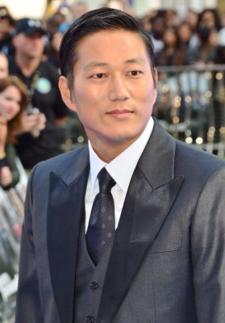
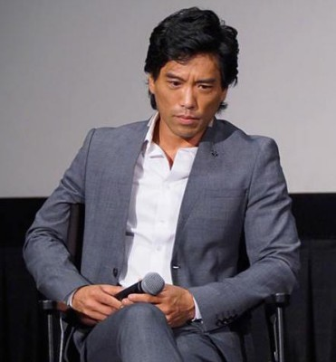
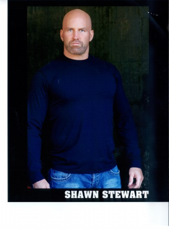

#6901 War


 IMDB-Wertung: 6.3 / 10
IMDB-Wertung: 6.3 / 10  Metascore: 0
Metascore: 0 
Sie sind Partner und sie sind Freunde: Die FBI-Agenten Jack Crawford und Tom Lone. Bei einem Einsatz geraten sie mit dem geheimnisvollen Auftragskiller Rogue aneinander, der darauf Tom und dessen Familie ermordet. Drei Jahre später: Jack will den Mörder seines Freundes stellen, der jedoch nach der Tat verschwand. Doch dann verdichten sich die Anzeichen, dass Rogue wieder aktiv ist und bei einem Privatkrieg zwischen Yakuza und Triaden eine wichtige Rolle spielt. Jack übernimmt die Ermittlungen in dem Fall und kommt auf die Spur des Killers...
Jahr: 2007
Dauer: 103 Minuten
FSK: 18
Land: USA Studio: LionsgateTonspuren: DTS - ,
Untertitel:
Auflösung: 1080p (1920x800) Größe: 9410 MB
Genre: Action, Thriller, Krimi
Regisseur: Philip G. Atwell
Drehbuch: Lee Anthony Smith
Soundtrack:
Darsteller:
 Jet Li als Rogue
Jet Li als Rogue Jason Statham als Crawford
Jason Statham als Crawford John Lone als Chang
John Lone als Chang- Devon Aoki als Kira
 Luis Guzmán als Benny
Luis Guzmán als Benny Saul Rubinek als Dr. Sherman
Saul Rubinek als Dr. Sherman Ryo Ishibashi als Shiro
Ryo Ishibashi als Shiro-  Sung Kang als Goi
- Mathew St. Patrick als Wick
 Nadine Velazquez als Maria
Nadine Velazquez als Maria- Andrea Roth als Jenny Crawford
- Mark Cheng als Wu Ti
- Kane Kosugi als Temple Garden Warrior
- Kennedy Montano als Ana
 Terry Chen als Tom Lone
Terry Chen als Tom Lone- Steph Song als Diane Lone
- Nicholas Elia als Daniel Crawford
 Kenneth Choi als Takada
Kenneth Choi als Takada Eric Keenleyside als Leevie
Eric Keenleyside als Leevie Paul Jarrett als Gleason
Paul Jarrett als Gleason Johnson Phan als Joey Ti
Johnson Phan als Joey Ti Hiro Kanagawa als Yoshido
Hiro Kanagawa als Yoshido- Aaron Au als Eddie
- Derek Lowe als Zero Surviving Yanagawa Mobster
 John Novak als Captain Andrews
John Novak als Captain Andrews- Warren Takeuchi als Harbor Yanagawa Lt.
 Nels Lennarson als Harbor Wu Police Officer
Nels Lennarson als Harbor Wu Police Officer-  Peter Shinkoda als Harbor Yanagawa Shatei
- Nadia Farès als Jade Agent Kinler
 Aaron Pearl als Jade Agent Clark
Aaron Pearl als Jade Agent Clark Tim Perez als Mexican Interpol Agent
Tim Perez als Mexican Interpol Agent-  Shawn Stewart als Mahjong Bouncer #1
- Brett Chan als Wu Ti Buddy
- Angela Fong als Kabuki Dancer
- Lauro Chartrand als Jade Agent , uncredited
- Ildiko Ferenczi als Hot Girl , uncredited
- John Dylan Louie als Bouncer , uncredited
- Annika Foo als Amy Lone
- Jung-Yul Kim als Yuzo
- Wilken Yam als Wong
- Mark Louie als Lau
- Jennifer Chung als Zero Teenage Girl
- Lucy Lu als Zero Hooker
- Randy Lee als Zero Yakuza-Making Love
- Don Lew als Yakuza Warrior
- Meghan Flather als Chinese Call Girl
- Thi Tran als Benny's Girl
- Mitchell A. Lee Yuen als Freelancer #1
- Brian Ho als Freelancer #2
- Larry Lam als Yanagawa Assassin
Datei: X:\FSK18-2000-2009\War (2007, FSK18, 1920x800).mkv seit 06.09.2017
Festplatte: FSK18
 Es gibt insgesamt 106 Filme in der Gruppe 'FSK18-2000-2009'
Es gibt insgesamt 106 Filme in der Gruppe 'FSK18-2000-2009'